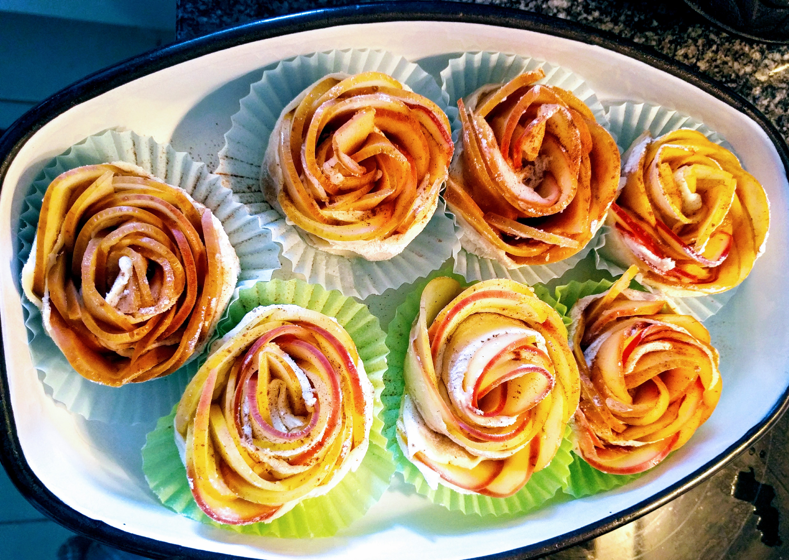
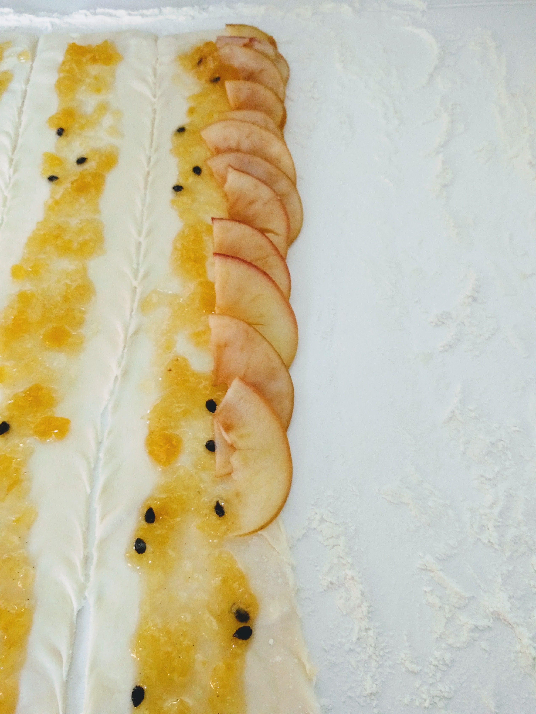

Roses de pommes

Pour 6-7 roses (autant de personnes) :
- Trois belles pommes rouges
- Un demi-citron
- Une pâte feuilletée rectangulaire
- Un peu de farine
- Un tiers de pot de confiture (ce que t'as — la recette originale conseillait de prendre de l'abricot, j'aime bien la faire avec de la confiture de fruits exotiques, essentiellement tout ce qui va bien avec les pommes est valable).
- (facultatif) Un peu de cannelle
- (facultatif) Un peu de sucre glace
- Remplir un petit saladier d'eau à moitié, y rajouter le jus du demi-citron.
- Laver les pommes, les couper en deux dans le sens de la longueur, enlever le trognon, et les couper en demi-tranches fines (sans les éplucher). Les mettre dans le saladier.
- Passer le saladier au micro-ondes cinq minutes au réglage plutôt fort (le genre qui te réchauffe un plat pour une personne en 3 minutes).
- Pendant ce temps, fariner un plan de travail, et étaler la pâte feuilletée dessus. L'étaler un peu plus avec un rouleau à pâtisserie (pas trop, il ne faut pas qu'elle se casse).
- Couper la pâte en largeur en six ou sept bandes. Étaler un peu de confiture au centre de chaque bande pour que ça recouvre la moitié de la surface, à part à une des extrémités où on ne met rien.
- Disposer les demi-tranches de pommes sur un des côtés de chaque bande, côté peau vers l'extérieur. Se reporter à l'image ci-dessous: il faut que les pommes dépassent un peu, tout en ayant une partie sur la confiture — et comme pour la confiture, laisser quelques centimètres d'une extrémité vide.
- Faire préchauffer le four à 190°C. Enrouler les bandes délicatement, pour finir sur l'extrémité vide (qu'on utilise pour refermer la tartelette). Ça prend la forme de roses \o/
- Mettre les roses dans des moules à muffins (beurrés ou avec du papier sulfurisé si ils ne sont pas en silicone)), et mettre au four pendant 45 minutes. Servir une fois refroidi.
